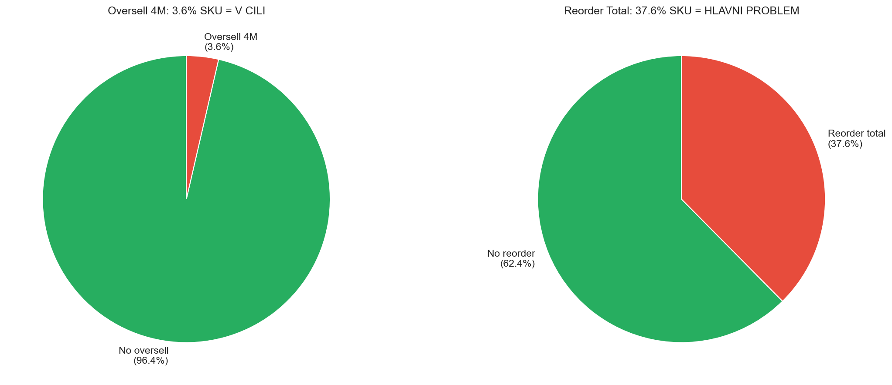
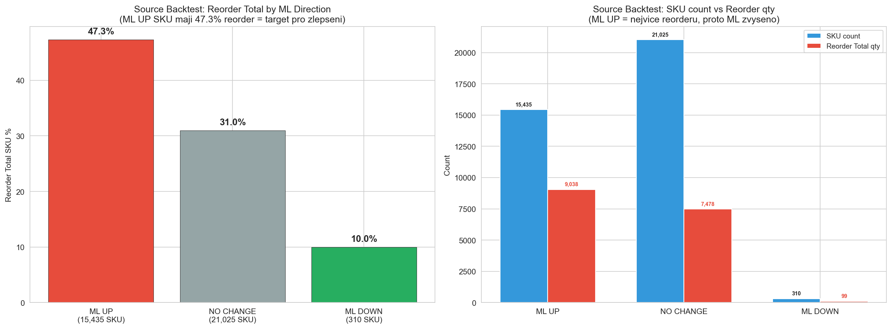
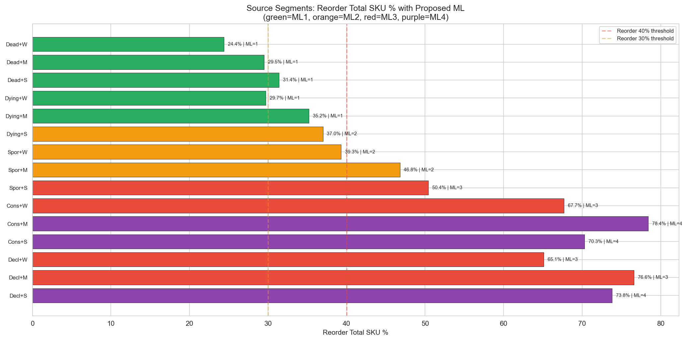
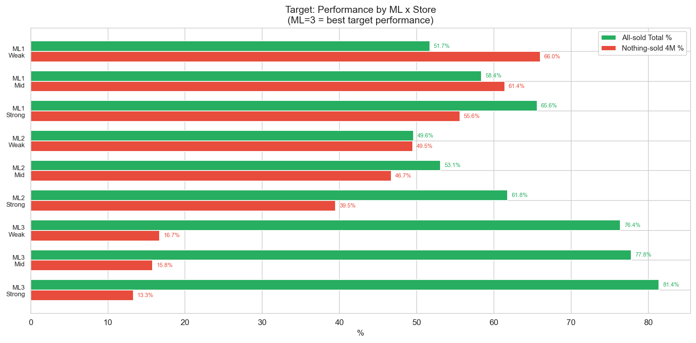

CalculationId=233 | Date: 2025-07-13 | Generated: 2026-03-22 15:28
Dopad pravidel z Report 2. v4: ML rozsah 0-4, orderable minimum ML=1. Optimalizovano na redukci reorderu.

| Metric | 4M | Total |
|---|---|---|
| Oversell SKU | 1,317 (3.6%) | 4,718 (12.8%) |
| Oversell qty | 1,464 (3.0%) | 5,578 (11.4%) |
| Reorder SKU | 7,087 (19.3%) | 13,841 (37.6%) |
| Reorder qty | 7,980 (16.4%) | 16,615 (34.1%) |

| Direction | SKU | Reorder Total qty | Reorder Total SKU % | Description |
|---|---|---|---|---|
| ML UP | 15,435 | 9,038 | 47.3% | SKU s vysokym reorderem - ML zvyseno aby se snizil objem redistribuce |
| ML DOWN | 310 | 99 | 10.0% | Pouze non-orderable SKU (nizky reorder, bezpecne snizit) |
| NO CHANGE | 21,025 | 7,478 | 31.0% | Existujici ML vyhovuje |

| Segment | Reorder Total SKU % | Proposed ML | Reason |
|---|---|---|---|
| Consistent+Mid | 78.4% | ML=4 | Nejvyssi reorder - maximalni ochrana |
| Declining+Mid | 76.6% | ML=3 | Velmi vysoky reorder |
| Declining+Strong | 73.8% | ML=4 | Velmi vysoky reorder + silna predajna |
| Consistent+Strong | 70.3% | ML=4 | Vysoky reorder + silna predajna |
| Consistent+Weak | 67.7% | ML=3 | Vysoky reorder |
| Declining+Weak | 65.1% | ML=3 | Vysoky reorder |
| Sporadic+Strong | 50.4% | ML=3 | Nad 40% threshold |
| Sporadic+Mid | 46.8% | ML=2 | Stredni riziko |
| Sporadic+Weak | 39.3% | ML=2 | Pod 40% ale nad 30% |
| Dying+Strong | 37.0% | ML=2 | Stredni riziko |
| Dying+Mid | 35.2% | ML=1 | Orderable minimum |
| Dead+Strong | 31.4% | ML=1 | Orderable minimum |
| Dying+Weak | 29.7% | ML=1 | Orderable minimum, nizky reorder |
| Dead+Mid | 29.5% | ML=1 | Orderable minimum, nizky reorder |
| Dead+Weak | 24.4% | ML=1 | Orderable minimum, nejnizsi reorder |

| # | Doporuceni | Ocekavany dopad | Priorita |
|---|---|---|---|
| 1 | Implementovat ML 0-4 rozsah s orderable min=1, reorder-optimized tree | Snizi reorder u ML UP skupiny (47.3% -> target pod 35%) | KRITICKA |
| 2 | Source Pattern x Store lookup (15 segmentu, reorder-driven) | ML=3-4 pro Consistent/Declining (reorder 65-78%) | KRITICKA |
| 3 | Target Sales Bucket x Store lookup (15 segmentu) | ML=3 pro 11+ sales, ML=1 pro 0 sales + Weak | KRITICKA |
| 4 | Seasonality modifier (+1 pro >=20% NovDec) | Ochrani sezonni produkty (reorder 52.2% vs 33.9%) | VYSOKA |
| 5 | Redist loop modifier (+1 pro 2+ transfers) | Zabrazi cyklickemu presouvani (reorder roste s poctem transferu) | VYSOKA |
| 6 | Low volatility modifier (+1 pro CV<1) | Ochrani stabilne prodavane produkty (reorder 45.2%) | STREDNI |
| 7 | Brand-store mismatch modifier (-1 pro Weak+Weak) | Snizi posilani na slabe kombinace | STREDNI |
Generated: 2026-03-22 15:28 | CalculationId=233 | v4 ML 0-4 | Orderable min=1 | Reorder-optimized